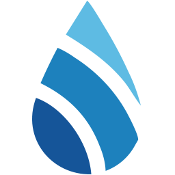

Reverse Osmosis
Greifenstein Wasserveredelung
Entwickler und Hersteller von Umkehrosmose- und Wasseraufbereitungsanlagen.
Produkte in der Datenbank

Greifenstein Wasserveredelung
INOX
Preis auf Anfrage
Bauart: Untertisch-Umkehrosmoseanlage mit VorratstankFilterwasser: 100–360 Liter pro TagWirkungsgrad: 50 % Abwasser laut Hersteller